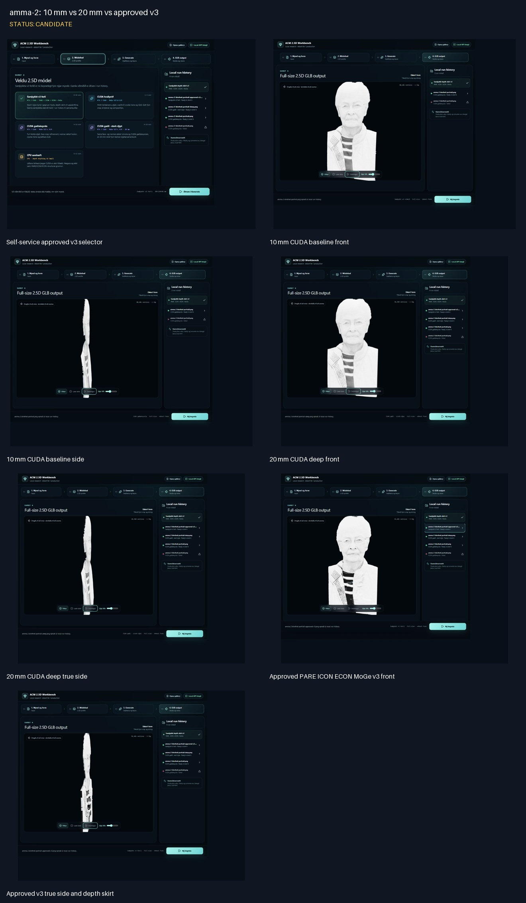
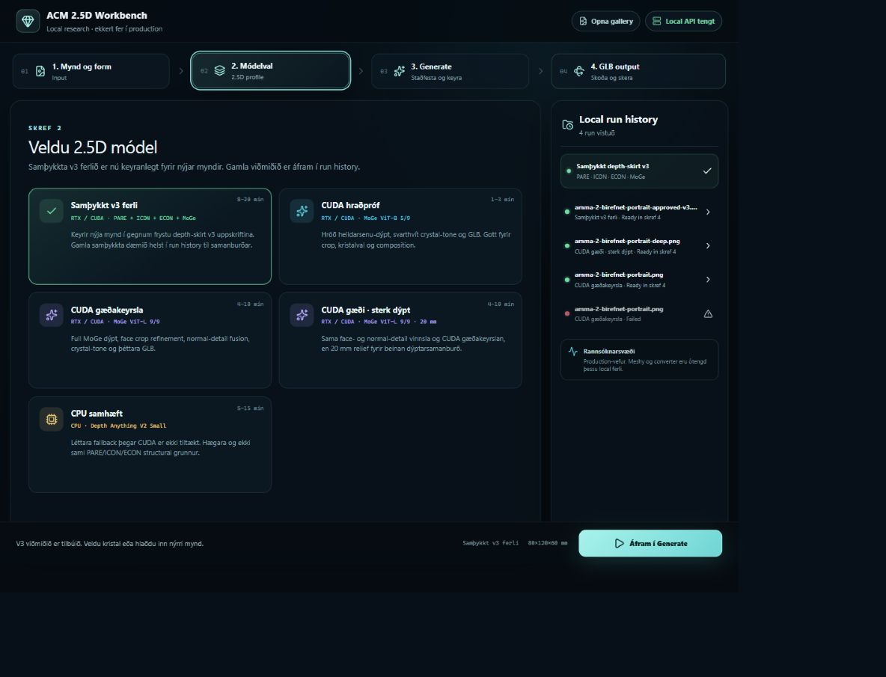
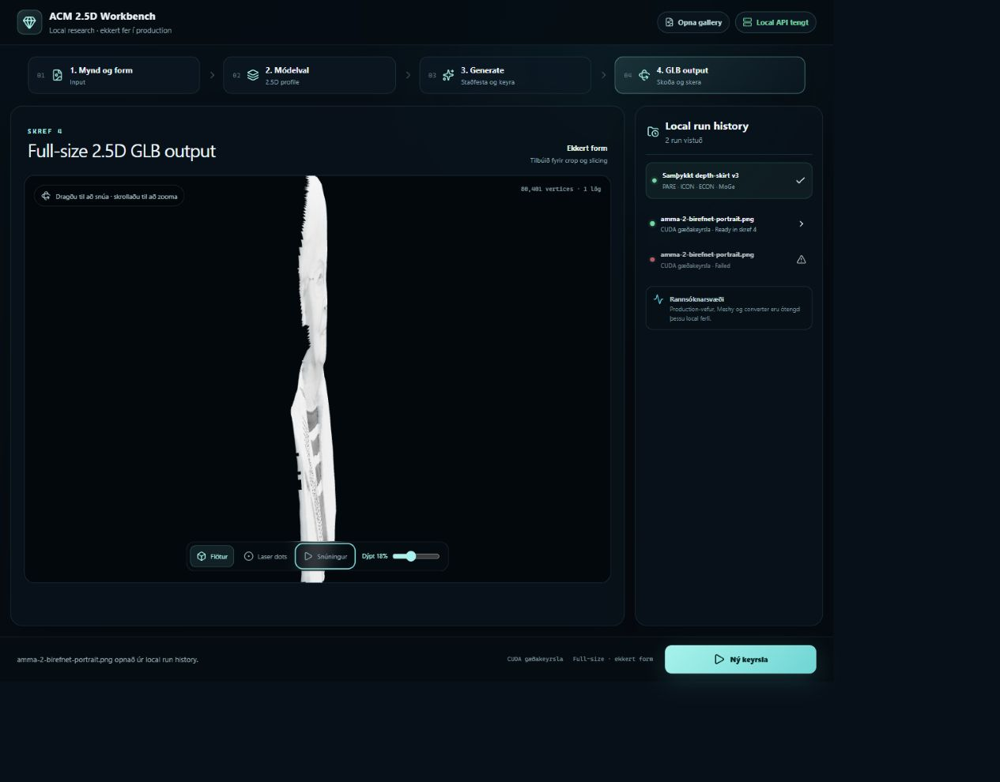
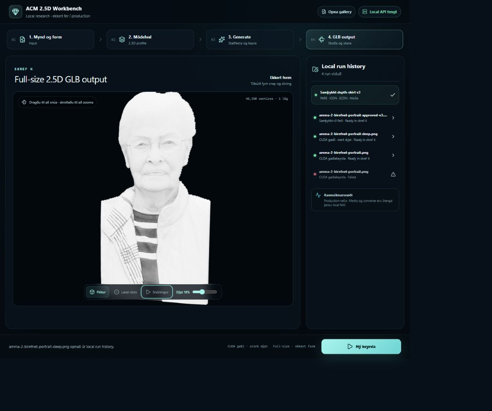
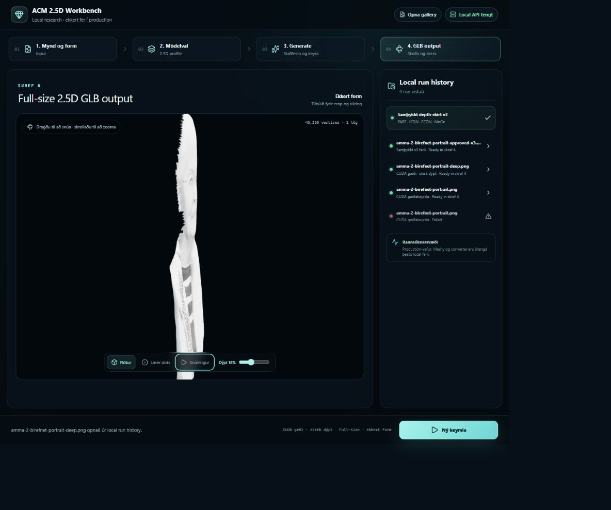
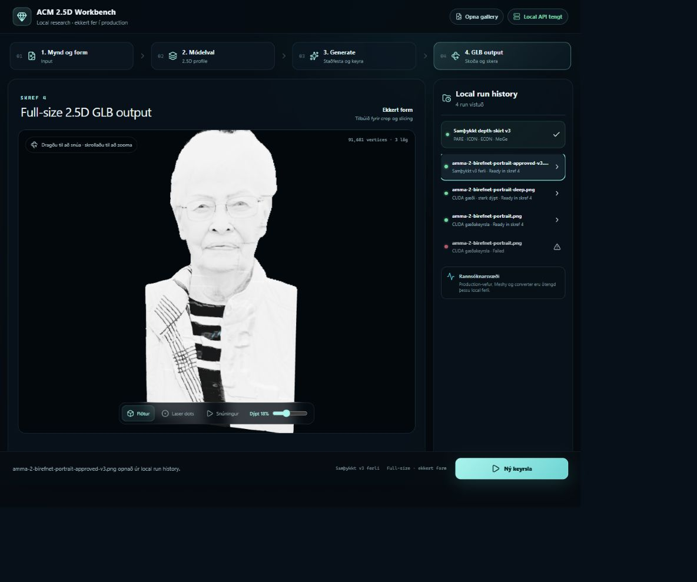
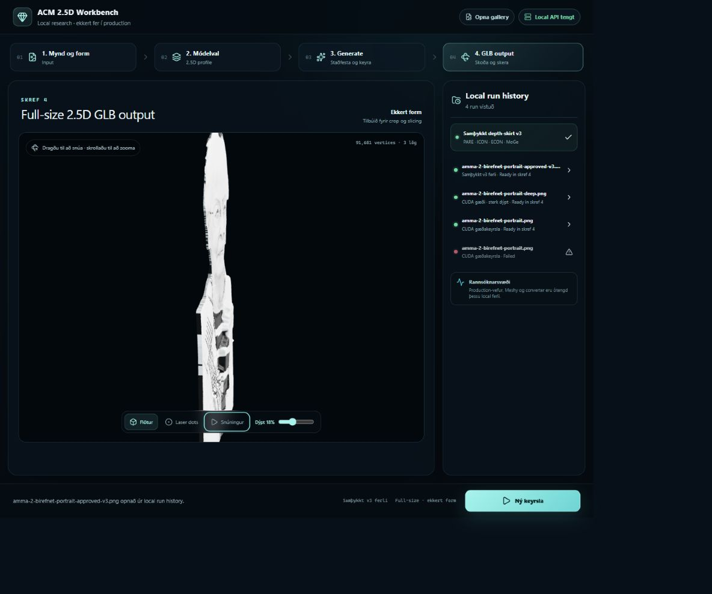

amma-2: 10 mm vs 20 mm vs approved v3
Status: CANDIDATE
- All three candidates use the same BiRefNet portrait cut-out 898dfc7155e0.
- 20 mm CUDA job: 1fa37434dc03, 45,350 vertices and 89,578 triangles.
- Approved-v3 job: 8a928842c81f, 91,681 vertices and 178,622 triangles across three layers.
- Approved-v3 person detection score: 0.999375; source-camera median registration error: 0.255 px.
- Candidate comparison only; the immutable two-person v3 reference was not overwritten.

Contact sheet
Self-service approved v3 selector
 10 mm CUDA baseline front
10 mm CUDA baseline front

10 mm CUDA baseline side

20 mm CUDA deep front

20 mm CUDA deep true side

Approved PARE ICON ECON MoGe v3 front

Approved v3 true side and depth skirt